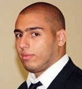

David Oliver
Technicien Réseau Informatique et Télécommunication
Mes Compétences
- Système d’exploitation (linux Centos, Windows Seven, Windows serveur 2003, 2008)
- Déploiment de materiel informatiques (Switch, routeur, écrans, imprimente local et réseaux)
- Câblage baie de brassage
- Matériel Cisco
- Gestion des stocks
- Déploiment Seven
Mes Experiences
- Septembre2015-Actuellement: Technicien informatique à Lycée Vauvenargues
- Juillet 2015: Technicien deploiement logiciel imprimante à Airbus Helicoptere
- Novenbre 2014-avril 2015: Technicien réseaux informatique à Centre allocation familliale
- Séptembre-Novembre 2014: Agent de conditionnement à Technocos
- Juin 2014: Technicien réseaux itinerant PACA à ipsum2i
Mes Formations
- 2013: Technicien Supérieur Réseaux Informatique et Télécommunication (AFPA Istres)
- 2011: Baccalauréat Professionnel Système Electronique Numérique (Aix En Provence)
- 2011: BEP Système Electronique Industriel et Domestique (Aix En Provence)